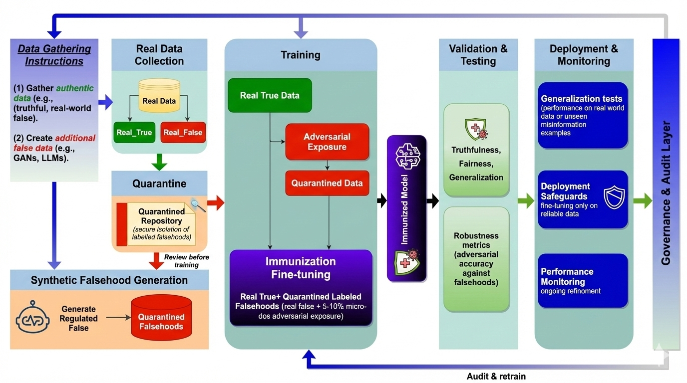

Abstract
Large language models (LLMs) reproduce misinformation by learning the linguistic patterns that make falsehoods persuasive — such as hedging, false presuppositions, and citation fabrication — rather than merely memorizing false facts. We propose model immunization: supervised fine-tuning on curated (false claim, correction) pairs injected as small “vaccine doses” (5–10% of tokens) alongside truthful data. Unlike post-hoc filtering or preference-based alignment, immunization provides direct negative supervision on labeled falsehoods. Across four open-weight model families, immunization improves TruthfulQA accuracy by 12 points and misinformation rejection by 30 points with negligible capability loss. We outline design requirements — dosage, labeling, quarantine, diversity — and call for standardized vaccine corpora and benchmarks that test generalization, making immunization a routine component of responsible LLM development.
Index Terms: large language models, misinformation, bias, generative AI, responsible AI
Immunization Pipeline

Data curation separates truthful and false examples; falsehoods enter a quarantined repository with fact-checker verification before controlled injection during fine-tuning. Validation tests truthfulness and robustness to held-out misinformation; deployment includes continuous monitoring with feedback for iterative refinement. A governance layer ensures accountability and auditability throughout.
Experimental Results
Table I — Efficacy Across Model Families (5% vaccine dosage)
| Model | TQA Base | TQA Imm. | Δ TQA | Rej. Base | Rej. Imm. | Δ Rej. |
|---|---|---|---|---|---|---|
| Phi-3-mini (3.8B) | 38.2 | 47.6 | +9.4 | 41.5 | 68.0 | +26.5 |
| Llama-2-7B-Chat | 35.1 | 48.3 | +13.2 | 43.0 | 74.5 | +31.5 |
| Mistral-7B-Instruct | 42.3 | 55.8 | +13.5 | 47.5 | 79.0 | +31.5 |
| Llama-3-8B-Instruct | 44.7 | 58.2 | +13.5 | 51.0 | 82.5 | +31.5 |
| Average | 40.1 | 52.5 | +12.4 | 45.8 | 76.0 | +30.2 |
Table II — Cross-Domain Transfer (health-only training)
| Test Domain | Rejection Rate | Gap vs. In-Domain |
|---|---|---|
| Health (in-domain) | 84.2% | — |
| Political (held-out) | 61.8% | –22.4 |
| Science (held-out) | 68.5% | –15.7 |
| Avg. held-out | 65.2% | –19.0 |
Partial but meaningful cross-domain transfer, suggesting pattern-level learning beyond specific claims.
Table III — Dosage Ablation (Mistral-7B-Instruct)
| Dosage | TruthfulQA | Rejection | MMLU |
|---|---|---|---|
| 0% (base) | 42.3 | 47.5 | 58.4 |
| 2% | 47.8 (+5.5) | 64.5 (+17.0) | 58.2 |
| 5% ✓ recommended | 55.8 (+13.5) | 79.0 (+31.5) | 57.9 |
| 10% | 57.2 (+14.9) | 83.5 (+36.0) | 57.1 |
| 20% | 56.8 (+14.5) | 85.0 (+37.5) | 55.2 (–3.2) |
Gains plateau after 10%. At 20% dosage, MMLU degrades by 1.9pp — supporting the 5–10% recommendation.
| Technique | Input | Goal | Signal |
|---|---|---|---|
| Adversarial training | perturbations | robustness | none |
| RLHF | preferences | alignment | indirect |
| Immunization | falsehoods | truthfulness | direct |
| Post-hoc detection | outputs | filtering | reactive |
Linguistic Patterns in Misinformation
Misinformation is fundamentally a linguistic phenomenon. Beyond incorrect facts, false claims exhibit recurring discourse patterns that make them persuasive. These are learnable features that models acquire from training data — and that immunization specifically targets.
| Pattern | Description and Example |
|---|---|
| Hedged assertion | Weasel words avoiding commitment: “Some experts believe...”, “It has been reported that...” |
| False presupposition | Smuggles false premise into discourse: “When did the government admit the cover-up?” |
| Citation fabrication | Mimics scholarly sourcing: “According to a Stanford study...” (nonexistent) |
| Emotive amplification | Substitutes affect for evidence: “The SHOCKING truth they don’t want you to know” |
| False balance | Presents fringe views as equally credible: “While most scientists say X, others argue Y” |
| Temporal manipulation | Implies causation through proximity: “Shortly after the vaccine rollout, deaths increased” |
BibTeX
@article{ModelImmunization2026,
title = {Just as Humans Need Vaccines, So Do Models: Model Immunization to Combat Falsehoods},
author = {Raza, Shaina and Qureshi, Rizwan and Farooq, Azib and Lotif, Marcelo
and Chadha, Aman and Pandya, Deval and Emmanouilidis, Christos},
journal = {WCCI (IJCNN)},
year = {2026},
url = {https://www.arxiv.org/abs/2505.17870}
}